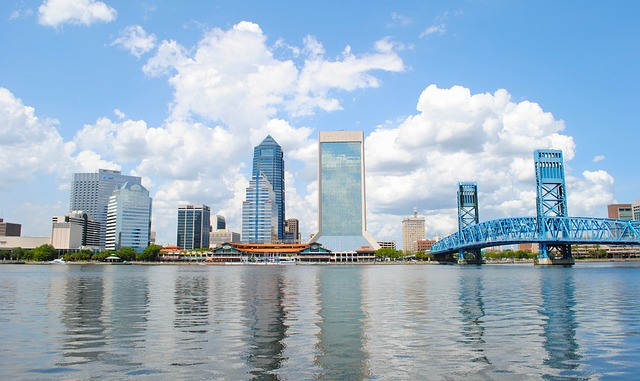

Discover Florida: A Beacon of Diversity and Progress
 Jacksonville, often referred to as the "River City," boasts a thriving population that highlights its significance within the state. As of the most recent census, the city is home to approximately 911,507 residents (U.S. Census Bureau, 2020). The city's incorporation took place in 1832, marking the beginning of its journey as a vital hub within the state (City of Jacksonville, n.d.).
Situated in the northeastern corner of Florida, Jacksonville occupies a strategic position along the Atlantic coast. Its proximity to major waterways and access to the Atlantic Ocean has contributed to its historical importance as a trading and transportation center. The city's coastal charm and unique blend of Southern and maritime influences shape its cultural identity.
With its vast area and diverse neighborhoods, Jacksonville is classified as an urban city. Its urban landscape reflects a mix of historic neighborhoods, modern developments, and natural beauty. The city's economic profile is multifaceted, with industries ranging from logistics and finance to healthcare and manufacturing. As a major port city, Jacksonville plays a critical role in international trade.
Jacksonville's average income level contributes to its economic landscape. The city's median household income is $55,336, reflecting its diverse economy and vibrant job market (U.S. Census Bureau, 2020). This figure underscores the city's potential for growth and prosperity across various sectors.
Jacksonville's historical legacy, coastal allure, urban character, and economic dynamism combine to define it as the "Bold City" with limitless potential. As Florida's largest city, Jacksonville stands as a testament to the state's growth and diversity, embodying the spirit of progress and innovation.
References:
- City of Jacksonville. (n.d.). Jacksonville's Story. Retrieved from https://www.coj.net/welcome/jacksonvilles-story
- U.S. Census Bureau. (2020). QuickFacts: Jacksonville city, Florida. Retrieved from https://www.census.gov/quickfacts/jacksonvillecityflorida
- U.S. Census Bureau. (2021). QuickFacts: Florida. Retrieved from https://www.census.gov/quickfacts/fact/table/FL/PST045222